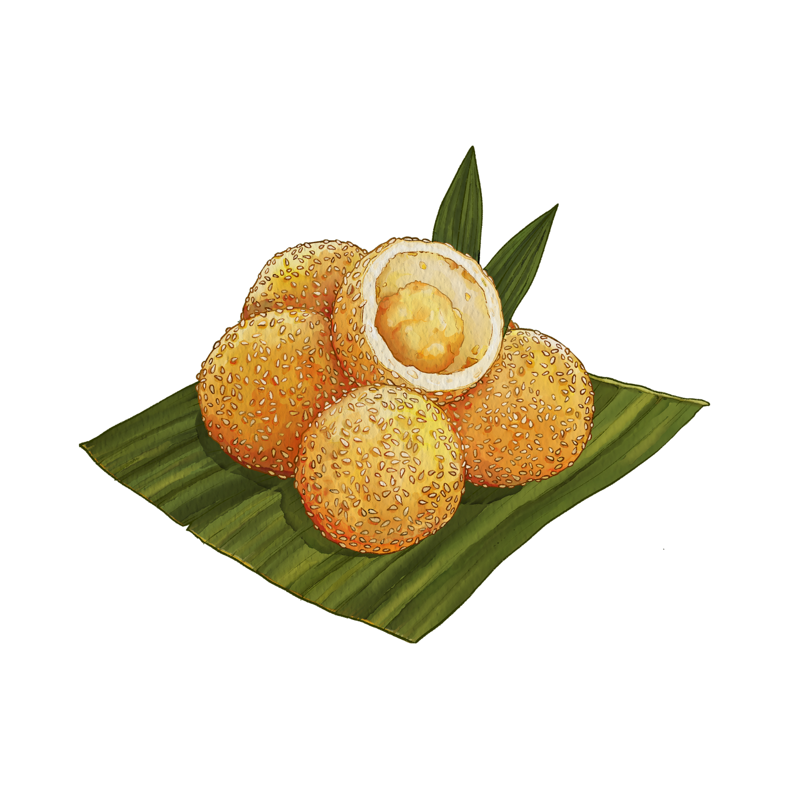

Produk Kami
| Produk | Harga |
|---|---|
|
Gethuk |
Rp10.000 |
Putu Ayu
|
Rp8.000 |
Kue Lapis
|
Rp7.000 |
|
Onde-Onde  |
Rp5.000 |
|
Wajik |
Rp6.000 |
Lemper Ayam
|
Rp9.000 |
Dadar Gulung
|
Rp4.000 |
|
Klepon |
Rp5.000 |
Deskripsi Produk
- Gethuk: Terbuat dari singkong, gula merah, dan kelapa, lembut dengan rasa manis khas.
- Putu Ayu: Lembut dengan aroma pandan dan taburan kelapa parut di atasnya.
- Kue Lapis: Kue berlapis warna-warni dengan rasa manis dan tekstur kenyal.
- Onde-Onde: Bola ketan berisi pasta kacang hijau, kenyal di luar dan lembut di dalam.
- Wajik: Terbuat dari ketan yang dimasak dengan gula merah dan santan, kenyal dan manis.
- Lemper Ayam: Ketan isi suwiran ayam berbumbu, dibungkus daun pisang, gurih dan mengenyangkan.
- Dadar Gulung: Panekuk tipis hijau dengan isi parutan kelapa manis, lembut dan gurih.
- Klepon: Bola-bola ketan isi gula merah cair, manis dan kenyal, meledak saat digigit.